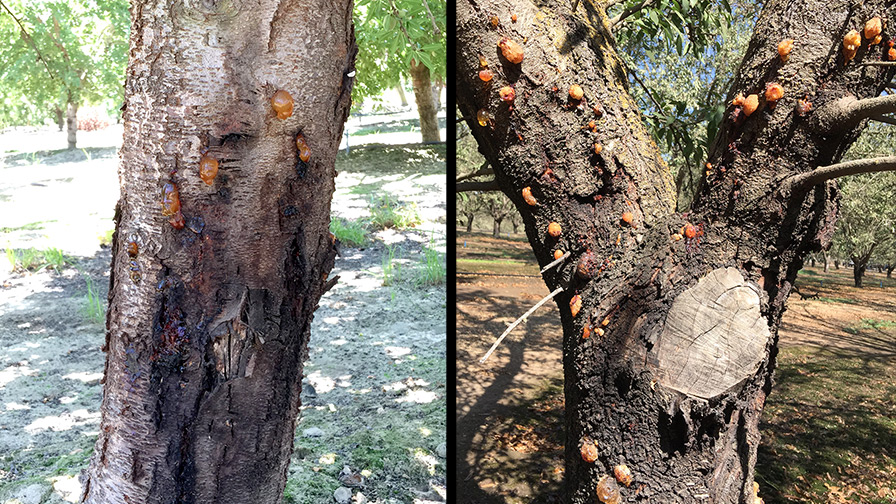

Plant Pathogens - How to Stop Their Spread in Merced County
By: Timothy Wallis
Agenda
1. Background
2. Transmissions of Plant Pathogens
3. Risk Factors in Merced County
4. Current Issues
5. Prevention measures
6. How farmers can help
7. Proposed Solutions
8. Conclusion and Q&A
9. References
Background
- Pathogens are organisms that cause disease
- Common plant pathogens include fungi, bacteria, viruses, and nematodes
- Spread through soil, water, air, and human activity
- Canker disease targets almond trees

Transmissions of Plant Pathogens
- Soil: Contaminated soil can harbor pathogens that infect plants
- Water: Irrigation water can spread pathogens between plants
- Air: Wind can carry spores and other airborne pathogens
- Human Activity: Movement of infected plants and tools can introduce pathogens to new areas

Risk Factors in Merced County
- High agricultural activity increases the likelihood of pathogen spread
- Climate conditions such as humidity and temperature can favor pathogen growth
- Lack of crop rotation can lead to soil-borne pathogens accumulating
- Insufficient monitoring and early detection systems
Current Issues
- Significant crop losses in Merced County due to plant pathogens
- Economic impact on local farmers and the agricultural sector
- Lack of awareness and education on pathogen prevention
- Limited access to effective treatment options